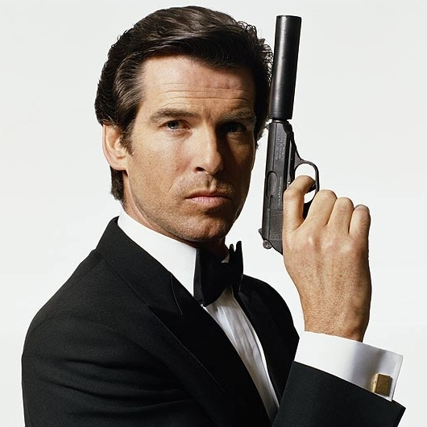

Pierce Brosnan
Audience Rating:
Opinion Rating:
GoldenEye (1995)

Plot
When a powerful satellite system falls into the hands of Alec Trevelyan, AKA Agent 006, a former ally-turned-enemy, only James Bond can save the world from an awesome space weapon that -- in one short pulse -- could destroy the earth! As Bond squares off against his former compatriot, he also battles Trevelyan's stunning ally, Xenia Onatopp, an assassin who uses pleasure as her ultimate weapon.
Rating
Rotten Tomotatoes
IMDb
Opinion
Really Good
GoldenEye is definitely one of the top 3 best James Bond films ever produced. The action spy thriller is incredibly engaging and you can never get your eyes off the screen. As Pierce Brosnan's first Bond film, he seriously nailed Bond's look and charisma. This movie would be 10/10 if the unrealistic, mass murdering Bond did not exist because Bond is not a machine gunner, he's a spy! Thanks to this film, it created the best video game ever, GoldenEye N64.Tomorrow Never Dies (1997)

Plot
Media mogul Elliot Carver wants his news empire to reach every country on the globe, but the Chinese government will not allow him to broadcast there. Carver doesn't take no for an answer and plans to use his media empire to fuel flames of war between the Western world and China. Thankfully, James Bond is on to the insane news tycoon and travels to China to stop him with the help of Chinese secret agent Wai Lin.
Rating
Rotten Tomotatoes
IMDb
Opinion
Decently Good
Pierce Brosnan's 2nd Bond film is amazing. While it is not better than GoldenEye, it still has a very unique villian who tries to cause a war between the Western world and China by using his media empire. People should definitely learn from the villian considering that the media can be a dangerous tool for war.The World Is Not Enough (1999)

Plot
Bond must race to defuse an international power struggle with the world's oil supply hanging in the balance. Elektra King, is the daughter of a murdered oil tycoon whom Bond is assigned to protect. The villain is Renard, who has a bullet lodged in his brain rendering him unable to feel pain. Also featuring nuclear weapons expert Dr. Christmas Jones.
Rating
Rotten Tomotatoes
IMDb
Opinion
Average
Brosnan's films starts to become a little bit boring. It is still a good film, but it is not as good as the 1st and 2nd Brosnan films which were way better.Die Another Day (2002)

Plot
James Bond is captured by North Korean agents and must serve a grueling prison sentence. He's finally released, and is convinced that someone in his own agency betrayed him. He escapes from custody and travels to Cuba, hot on the heels of Zao, the agent who put Bond behind bars. Meanwhile, Bond begins romancing NSA agent Jinx as he uncovers a scheme concocted by Zao and British millionaire Graves, involving a highly destructive laser.
Rating
Rotten Tomotatoes
IMDb
Opinion
Okay
As Brosnan's final film, it was definitely the weakest out of the four. It tries too hard on CGI and absurd modern action fights. This film is honestly not terrible, but it is definitely one of the lowest rating Bond films in the franchise. Anyone who has watched this movie before will know that this one contains the worst CGI ever, the giant ocean wave scene. As for final thoughts, Brosnan did really well in his first 2 films, then the plot and quality sort of dropped because it tries too hard to be modern and use CGI. Brosnan's Bond look is definitely the best though.